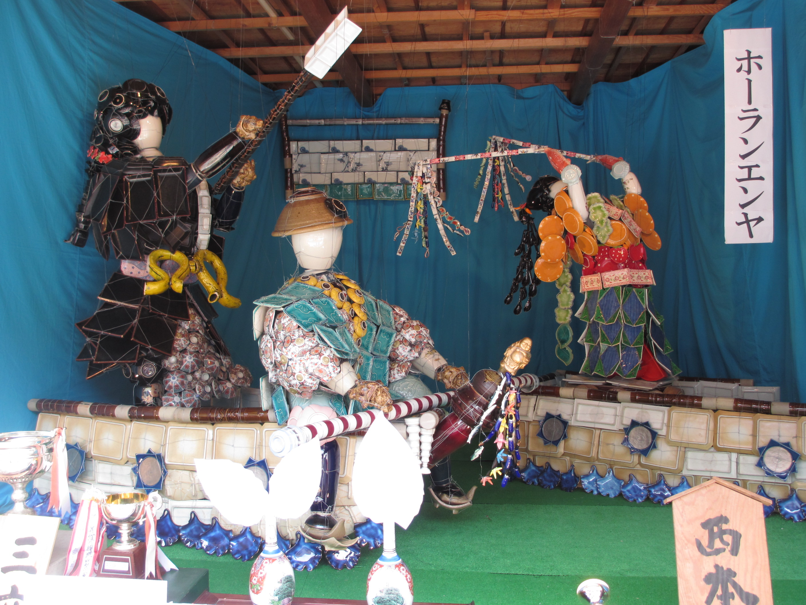
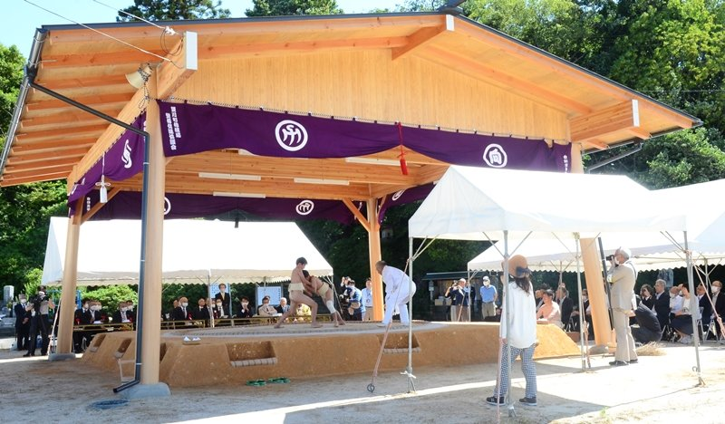
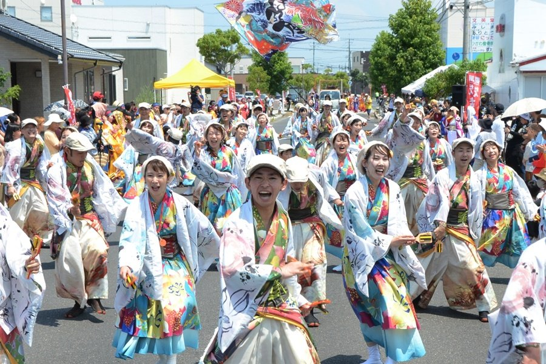

直江祭り
江戸時代の享保年間から300年間継承されてきました、出雲市指定無形文化財「直江一式飾」が12町内ごとに展示されます。 一式飾は、その昔火事があり火の守護神秋葉権現に申し訳ないと思い、お詫びのしるしに秋葉権現のご神体を巡幸渡御（お旅）の折に家の道具を使って様々な人形を作って、お慰めしたのが始まりです。

岩野薬師祭
手足が不自由な人や乳の出が悪い人にご利益があるとされる奈良時代行基作と伝わる岩野薬師如来の縁日。各日14時からの法要のほか、8 日午後には、江戸時代から続く奉納相撲大会が行われる。そのほか多彩なイベントや、約90件の露店が並び、祭りを盛り上げる。

斐川だんだんよさこい祭り
よさこいの始まり
昭和29年，当時の不景気風を吹き飛ばし，市民を元気づけようと行われたのが始まり。 今や日本のみならず，世界にもひろがりつつある「よさこい」。
